がん性疼痛に対するオピオイド¶
痛みを評価して治療を選ぶ¶
痛みの神経学的分類¶
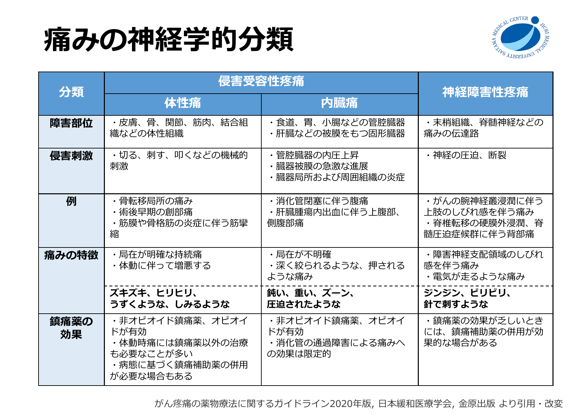
痛みの強さに応じた薬剤選択¶
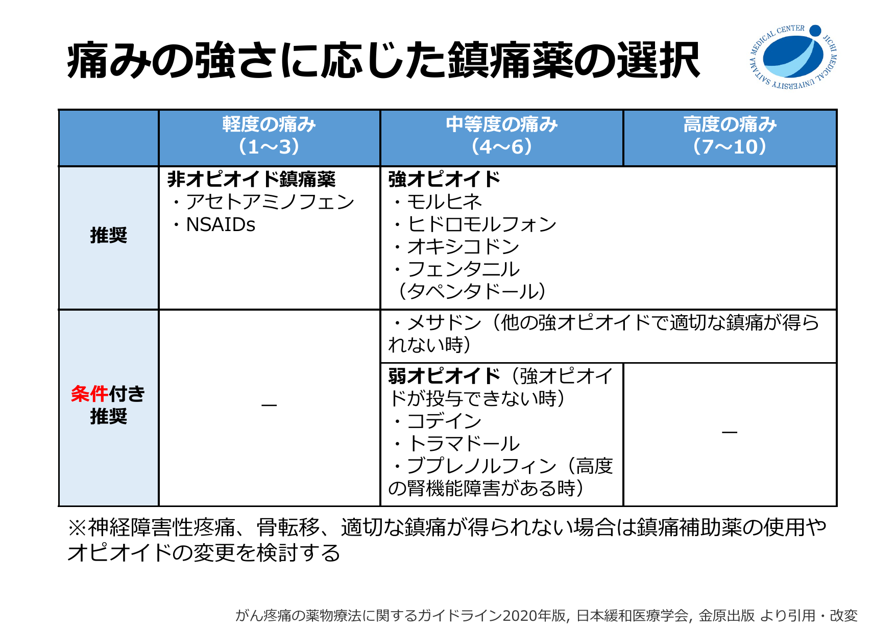
ポイント
- 中等度〜高度の痛みには強オピオイド（モルヒネ・ヒドロモルフォン・オキシコドン・フェンタニル）が第一選択
- 弱オピオイド（コデイン・トラマドール）は「強オピオイドが投与できない時」の条件付き推奨
- 神経障害性疼痛・骨転移・難治性疼痛では鎮痛補助薬やオピオイド変更を検討
薬剤別の特徴¶
オキシコドン¶
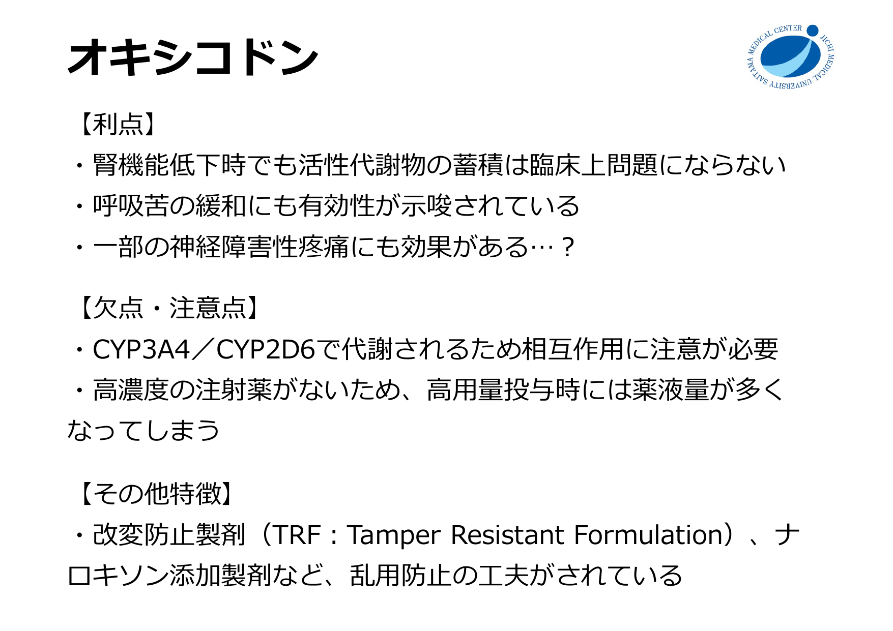
フェンタニル¶
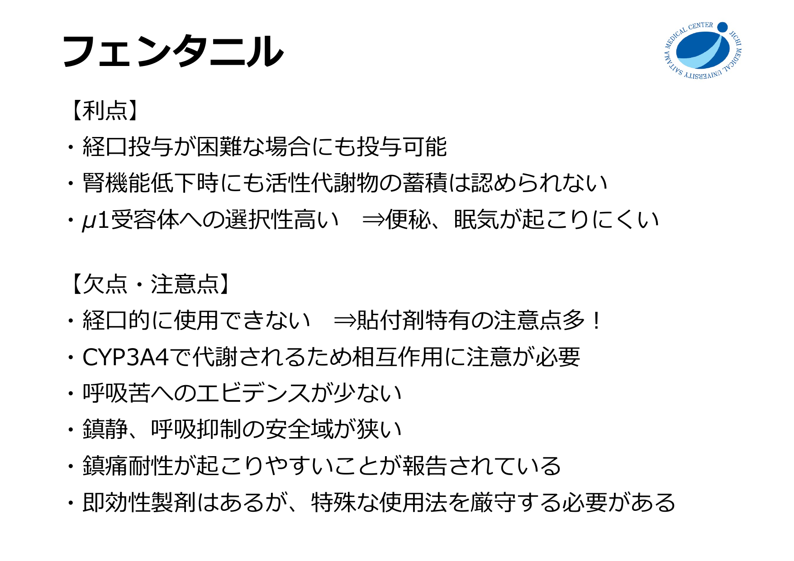
フェンタニル貼付剤¶
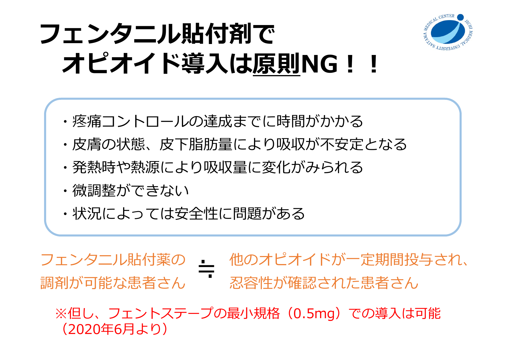
貼付剤での導入は原則避ける
効果発現と用量調節に時間がかかり、皮膚状態・皮下脂肪量・発熱などで吸収が変動する。原則として、他のオピオイドで必要量と忍容性を確認してから切り替える。
トラマドール / トラムセット¶
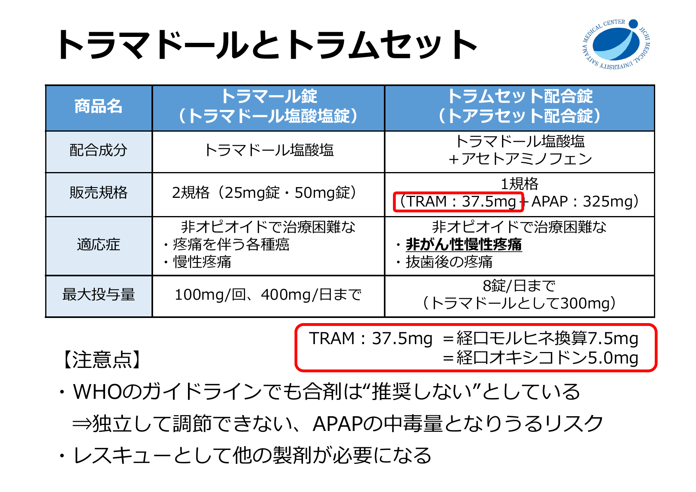
患者因子による選択¶
腎機能¶
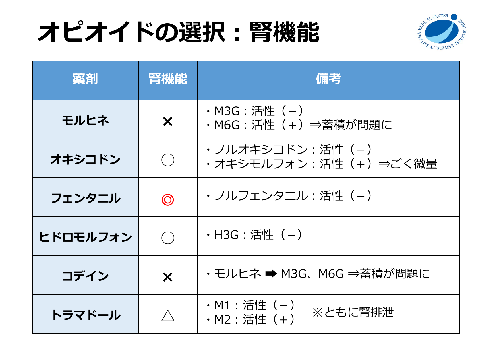
CYP阻害薬・誘導薬との相互作用¶
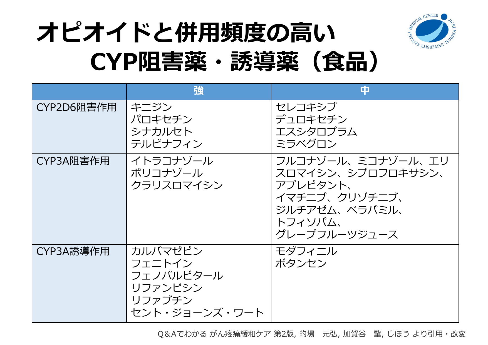
CYP3A4/CYP2D6 に注意
オキシコドン・フェンタニルは CYP3A4 で代謝。イトラコナゾール、ボリコナゾール、クラリスロマイシン、リファンピシンとの併用で血中濃度が大きく変動する。
呼吸苦の改善を重視する場合¶
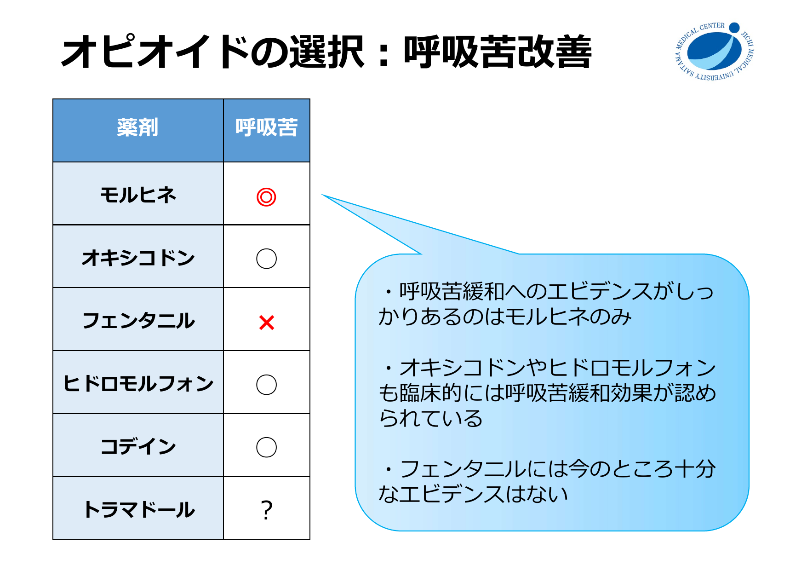
等価換算¶
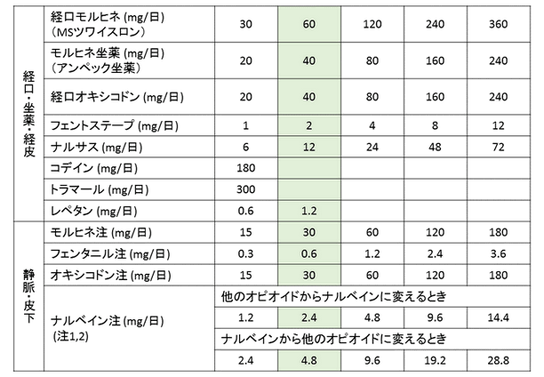
換算の基準：経口モルヒネ 30 mg/日 = 経口オキシコドン 20 mg/日 = 経口ヒドロモルフォン 6 mg/日 = フェントステープ 1.0 mg/日 = フェンタニル注 0.3 mg/日
レスキュードーズ¶
レスキュー製剤の種類¶
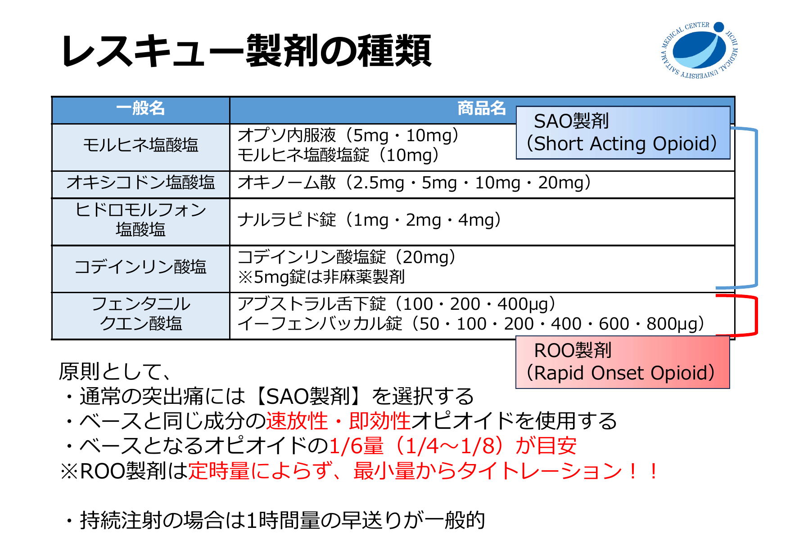
原則
- 通常の突出痛には SAO製剤（Short Acting Opioid）を選択
- ベースと同じ成分の速放性製剤を使用
- レスキュー量の目安：ベース 1 日量の 1/6（1/4〜1/8）
- 持続静注の場合は 1 時間量の早送りが一般的
用量調節¶
増量方法¶
- レスキュー使用分を上乗せする方法：1日レスキュー総量 ＋ 定時量 ＝ 翌日の投与量
- 定時薬を増量する方法：鎮痛・副作用を評価し 30〜50% ずつ増量
- 経口モルヒネ換算 120 mg/日まで：50% まで増量可
- 120 mg/日以上：20〜30% の増量
投与量の評価（痛み × 眠気）¶
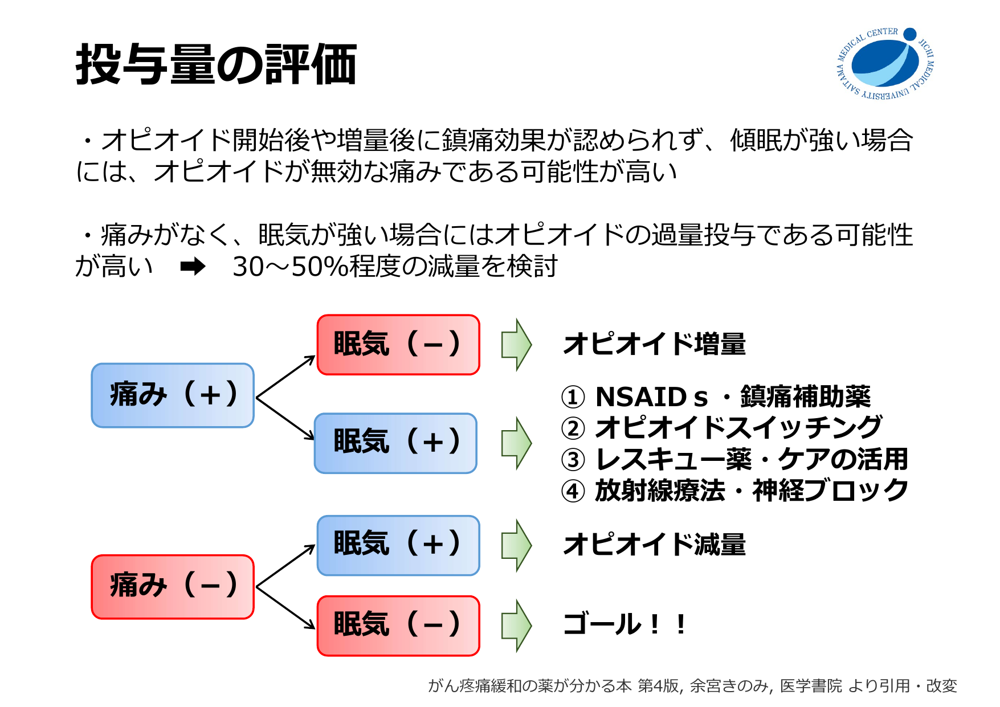
| 痛み | 眠気 | 対応 |
|---|---|---|
| あり | なし | オピオイド増量 |
| あり | あり | NSAIDs・鎮痛補助薬 / オピオイドスイッチング / レスキュー活用 / 放射線・神経ブロック |
| なし | あり | オピオイド減量（30〜50%） |
| なし | なし | ゴール |
オキシコドン静注 / 皮下注タイトレーション¶
前提¶
- オキファスト注 10 mg/1 mL を前提とする
- 0.05 mL/hr = 0.5 mg/hr
開始¶
オキシコドン持続静注 or 持続皮下注 0.05 mL/hr［0.5 mg/hr］で開始
レスキュー¶
- 疼痛時：意識清明 かつ RR 10回/分以上なら 1時間量を早送り
- 30分以上あけて反復可
増量¶
- 意識清明 かつ 悪心等の副作用が許容可能 かつ RR 10回/分以上 の場合
- 8時間でレスキュー3回使用したら、0.05 mL/hr [0.5 mg/hr] ずつ増量
経口移行¶
- 換算：力価は静注4:経口3。静脈注射の必要量を 3/4 すれば良い。
- 直近 24 時間の総必要量を集計 → 経口徐放製剤の 1 日量へ換算 → レスキューは速放性オキシコドンで設定
副作用マネジメント¶
オピオイドの副作用¶
3大副作用
- 便秘（95%）：耐性なし → 緩下剤は必須、オピオイド開始時から予防投与
- 悪心・嘔吐（30%）：耐性あり → 約2週間で耐性出現、制吐剤は短期使用でよい
- 眠気（20%）：耐性あり → 3〜5日で消失することが多い
悪心・嘔吐の治療¶
- 第1選択：プロクロルペラジン（ノバミン） − 延髄のドパミン受容体拮抗
- ドンペリドン・メトクロプラミドは中枢移行が少なく効果不十分になりやすい
- 体動時に誘発される場合 → ジフェンヒドラミン（トラベルミン）が有効なことあり
OIC（オピオイド誘発性便秘）¶
- モルヒネ・コデイン・オキシコドン・ヒドロモルフォンはほぼ全例で便秘
- フェンタニルは μ1 受容体選択性が高く便秘は軽度になりやすい
- 経口投与 > 静注・皮下注 で便秘の程度が強い
- ナルデメジン（スインプロイク）（PAMORA）：腸管のオピオイド受容体を末梢でブロック、緩下効果とは異なる機序
オピオイドスイッチング¶
| 理由 | スイッチング先 |
|---|---|
| 腎機能障害 | モルヒネ → ヒドロモルフォン・オキシコドン → フェンタニル・メサドン |
| CYP3A4 相互作用 | オキシコドン・フェンタニル → モルヒネ・ヒドロモルフォン |
| 鎮痛不十分 | フェンタニル → モルヒネ・ヒドロモルフォン・オキシコドン → メサドン |
| 呼吸困難・咳嗽 | フェンタニル → モルヒネ・ヒドロモルフォン・オキシコドン |
| 副作用 | 減量検討 → スイッチング |
スイッチング時の用量設定
- 痛みが十分コントロールされている場合：計算上の等鎮痛用量から 25〜50% 減量して開始
- 痛みコントロール不十分な場合：等鎮痛用量の 100〜125% で開始可
参考資料¶
- 中川 朗宏. 医療用麻薬の基本的な考え方と処方意図. 第11回 がん薬物療法勉強会（自治医科大学附属さいたま医療センター）, 2024年9月
- 日本緩和医療学会. がん疼痛の薬物療法に関するガイドライン 2020年版
- 余宮きのみ. がん疼痛緩和の薬が分かる本 第4版, 医学書院
免責事項
このページは教育目的の個人用クイックリファレンスです。最終判断は担当医の臨床判断に基づくこと。